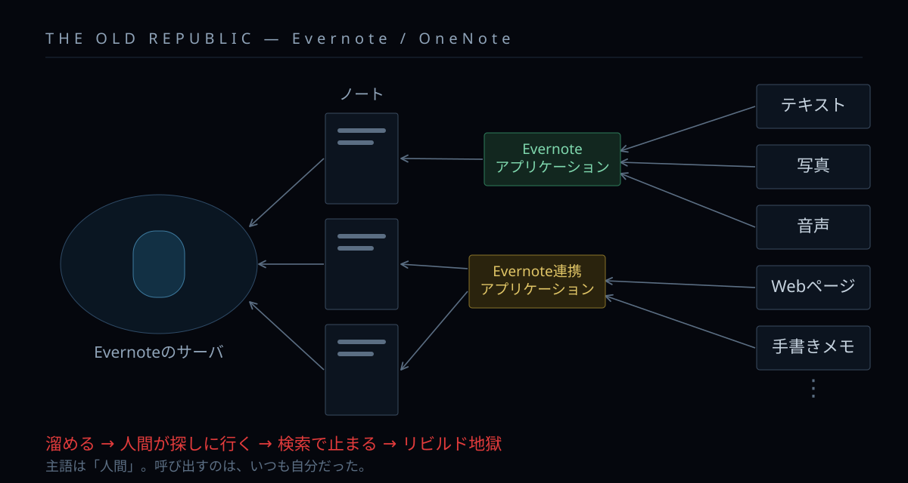
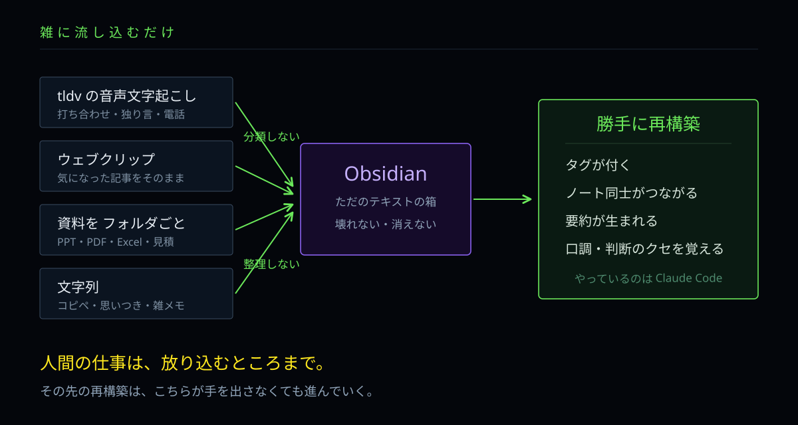
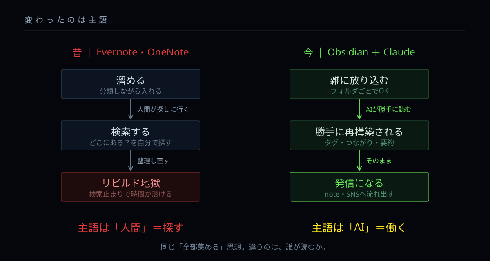

MONTHLY BRIEFING
マンスリーAIオビワン
2026 / 7 / 27＠中百舌鳥

遠い昔、はるか彼方の
銀河系で……
情報が銀河を埋めつくす時代。人々は、あらゆるものを一箇所に集めようとした。テキスト、写真、音声、Webページ、手書きのメモ。緑の象の名を持つ帝国が、それを引き受けていた。
だが、集めた者を待っていたのは検索という細い通路だけだった。溜めるほど探す時間は増え、整理し直す作業に日々が溶けていった。呼び出す者は、いつも自分だった。
いま、状況が変わった。雑に放り込むだけで、勝手に読み、勝手に組み直す存在が現れたのだ。集める者は、探すことをやめてよくなった。
これは、三人の男が自分の仕事を投げ込み、探してもいなかった答えを受け取った記録である……
整理しなくていい。分類しなくていい。読み返さなくてもいい。放り込むところまでが人間の仕事で、その先は全部AIがやります。

全部集めた時代は、すでにありました。Evernote、OneNote。思想は今日の話と全く同じです。

あれだけ整理を頑張ったのに、最後に手に入ったのは検索窓ひとつ。溜まるほど探す時間が増えて、結局作り直しに時間が溶けていく。
問題は道具ではありませんでした。主語が「人間」だったこと。呼び出すのは、いつも自分だったんです。

tldvの音声文字起こし、ウェブクリップ、資料はフォルダごと、思いついた文字列。全部そのまま投げます。

それだけでタグが付き、ノート同士がつながり、要約が生まれ、口調まで覚えられていく。人間が触るのは、入れるところまでです。

同じ「全部集める」思想。違うのは、誰が読むか。


「勝手に組み直す」の正体です。ここだけ、少しだけ仕組みの話をします。
普通のチャットAIは、聞かれたことに答えて終わりです。文章は返ってくるけれど、ファイルは1つも動かない。
エージェントは違います。あなたのフォルダを自分で開いて、読んで、書き換えて、新しいファイルを作る。失敗したら自分で気づいて、やり直す。人間が横で指示を出し続けなくても、目的に向かって手を動かし続けます。
これが、Obsidianに雑に放り込んだものが勝手に整理されていく理由です。誰かが手で整理しているわけではなく、エージェントが自分で読みに来ている。
人間がやっていたのは、ずっと STEP 01 の「見る」 でした。探して、開いて、確認する。あの時間が丸ごと消えます。
今日の3つの要件定義も、この延長線上です。喋って、投げて、返ってきたものを直すだけ。コードを書ける必要はありません。
新しく買うものは、ほぼありません。4つ目が増えただけで、前の3つは昔から手元にあったものです。
完璧な自動連携を作ろうとすると、その構築で力尽きます。手で入れる10分を先に始めた人が勝つ。溜まってさえいれば、AIは読みに来ます。

株、競馬、配管設備。業種は全く違うのに、起きたことは同じでした。プロンプトと、返ってきた要件定義をそのまま出します。
情報収集の相談だったのに、MVPは誤発注ガードになった。8874を8884と打ち間違える、あれを社名の巨大表示で殺す。技術的には一番簡単で、一番痛い。
探していたのは情報収集。出てきたのは事故防止だった。
歩様の自動判定は研究フェーズで今すぐ無理。代わりに返ってきたのは「まず5段階で手入力して溜めろ」。その手入力ログが、将来の学習データそのものになる。
欲しかったのはAI判定。出てきたのは着手する順番だった。
先にカタログを登録すると、質問が抽象論から具体に変わって喋れるようになる。そして溜まった答えが、そのまま新人研修の教材と顧客向けチャットボットに化けた。
ナレッジ整理のはずが、教育と接客が同時に手に入った。
集めて、AIの前に並べた。それだけで、探していなかった答えが浮上した。これは偶然ではなく、構造です。

なぜ、探していない答えが出てくるのか。読書の世界に、同じ現象の名前があります。
1冊ずつ順番に読むと、材料が同時に並ばない。だから浮上しない。
AIも、構造は完全に同じです。雑に集めて同時に置くから、あふれ出す。
溜まったものが自分の分身になります。そして毎朝、今日書くべきこと・やるべきことが並んでいる状態になる。判断しなくていい。貼るだけです。
あふれ出すのは、溜まってからです。だから今日は、溜め始めるだけでいい。
録音 ／ 資料フォルダ ／ Obsidian ／ Claude Code